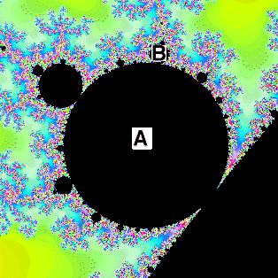

8. (a) Disc B is in the position of a 3-cycle around the main
cardioid. Because it is a 21-cycle component, by the
attachment rule
we see A must be a 7-cycle component.

(b) Note that at the point labeled A we see four lobes joined, indicating
a 4-cycle; at the point labeled B we see three lobes joined, indicating
a 3-cycle. No other cycles are visible, so we deduce this Julia set
corresponds to a 3 ⋅ 4 = 12 cycle.